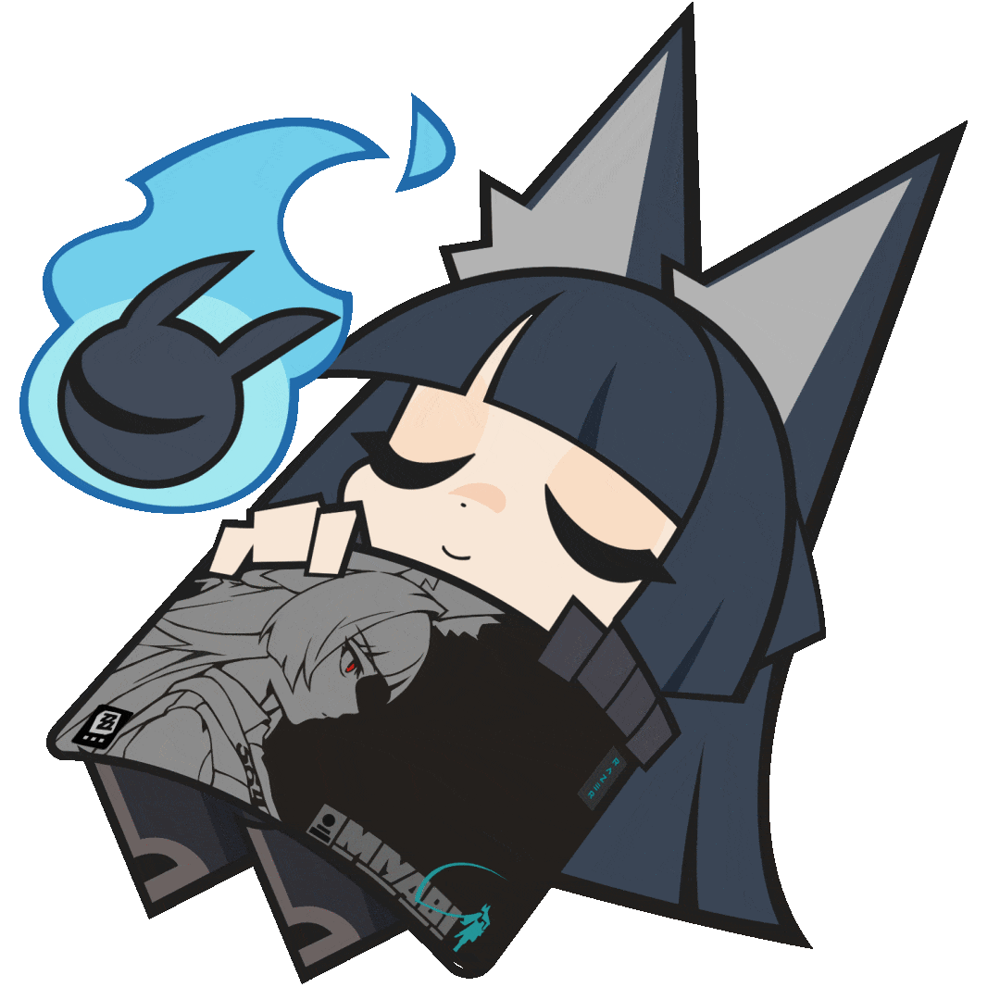
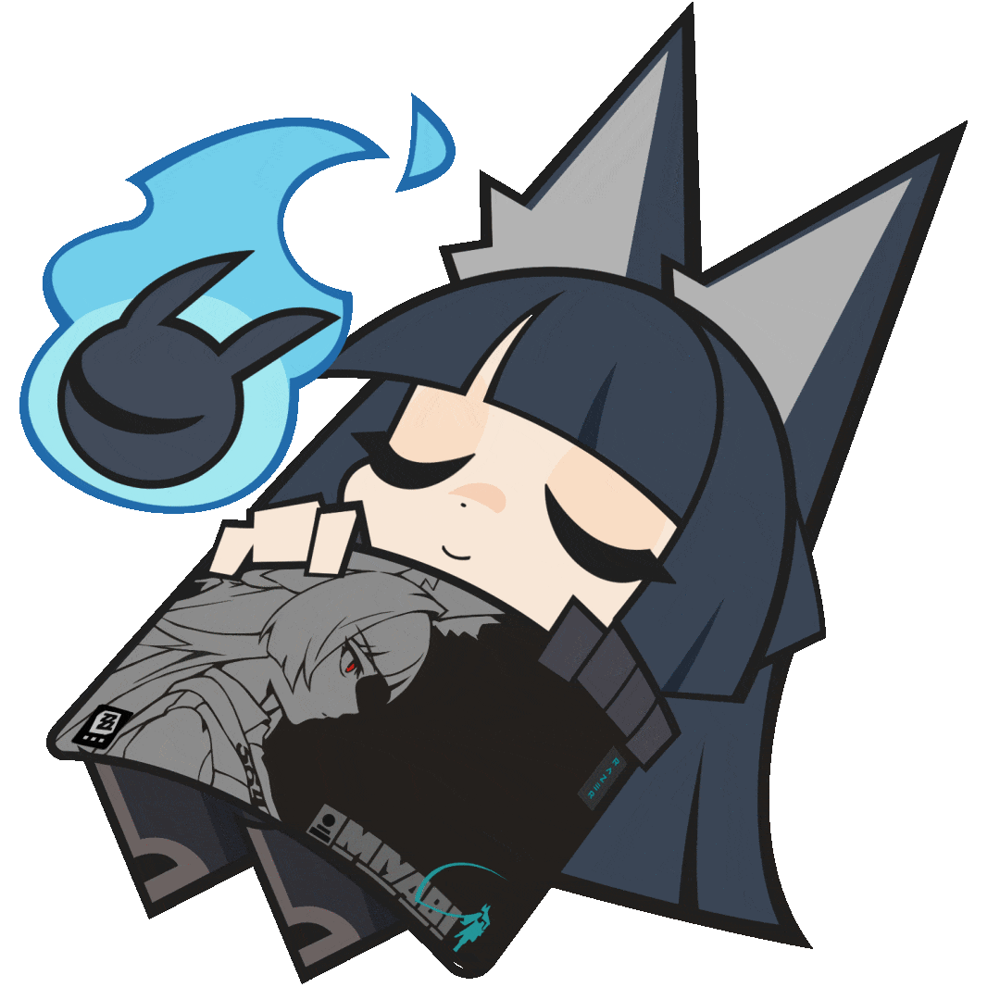

1. แนะนำตัว (Introduction / Profile)
ชื่อ-นามสกุล: นายธนชิต ทวิลา
ชื่อเล่น: โอมห์
คณะ / มหาวิทยาลัย: มหาวิทยาลัยราชภัฏอุดรธานี
ปีการศึกษา: ปี 2
ความสนใจ: AI, Web Development, Cybersecurity, Data Science, Game Development, 3D Modeler, Animator
2. ทักษะ (Skills)
- Programming: Python, Java, HTML, CSS, JavaScript, Lua
- AI & Data: TensorFlow, scikit-learn, Power BI, SQL
- Tools: Git, VS Code, Figma, Google Colab
- Soft Skills: การทำงานเป็นทีม, การแก้ปัญหา,
3. ผลงานที่ผ่านมา (Projects / Portfolio)
- เว็บไซต์แนะนำสถานที่ท่องเที่ยว
- Ui Figma
ภาพผลงาน(ไม่มีครับเปลี่ยนคอมรูป,ไฟล์งานหายหมด😭🙏):
 

4. การศึกษา (Education)
คณะวิทยาศาสตร์ สาขาวิทยาการคอมพิวเตอร์
มหาวิทยาลัยราชภัฏอุดรธานี
2568 - ปัจจุบัน
5. กิจกรรมและผลงานอื่น ๆ (Activities / Achievements)
- ผู้เข้าร่วมอบรม “AI for Beginners by Microsoft”
- เข้าร่วมแข่งขัน UDRU Hackathon 2025
- ได้รับรางวัลชนะเลิศโครงงานด้าน IoT
- *กำกับไว้เล็กน้อยว่าที่กล่าวมาทั้งหมดไม่ใช่ความจริง*
6. ติดต่อ (Contact)
Email: 67040233111@udru.ac.th
GitHub: https://github.com/Temprgxe
Facebook: (ลิงก์ LinkedIn)
LineID: 49za
7. องค์ประกอบเสริม (Career Interest)
เป้าหมายในอนาคต: พัฒนาทักษะด้าน AI และ Data Science เพื่อทำงานในสายเทคโนโลยีและการพัฒนาเกม